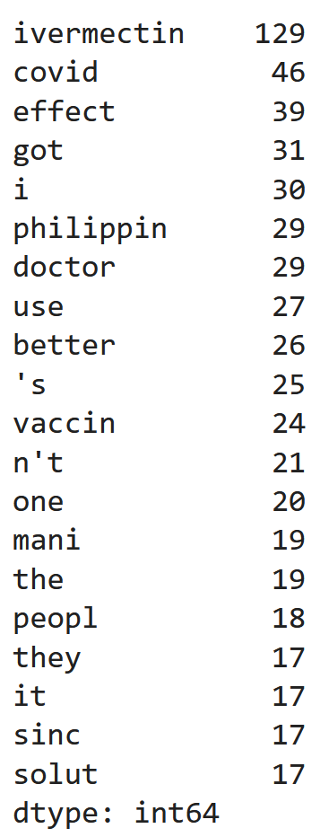
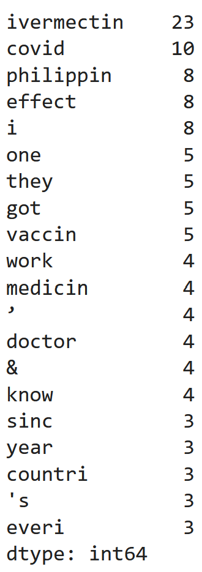

Question 2: What words appear in the most viral Tweets?
Before we analyzed what words appeared in the most viral Tweets, we first sorted the data frame by most viral Tweets using the following code:
likes_df = df.sort_values('Likes', ascending=False)
likes_df.head(20)
We then analyzed the most common words across all the Tweets. We used the words from the stemmatized text using the following code:
common_words = pd.Series([item for sublist in df['Stemmed'] for item in sublist]).value_counts()
common_words.head(20)
The results of the code are pictured below. As you can see, "ivermectin" was the most common word followed by "covid", and "effect".
Then, we finally analyzed the most common words among the top 20 most viral Tweets in our data frame using the followign code:
common_words = pd.Series([item for sublist in likes_df['Stemmed'].head(20) for item in sublist]).value_counts()
common_words.head(20)
Below, you can see the results that we got. As you can see, "ivermectin" was still the most common word, followed by "covid". However, "philippin" this time is the 3rd most common word among the top 20 most viral Tweets instead of "effect".
